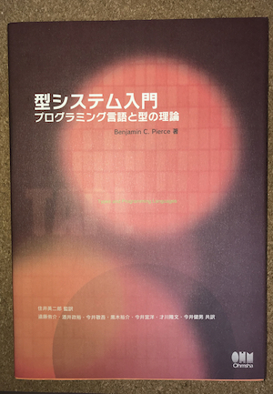

| 書籍名 | 発売日 | 発売元 | その他 |
|---|---|---|---|
| 型システム入門 | 2013/03/26 | オーム社 | 出版社サポートページ 著者サポートページ 正誤表 Amazon レビュー |
| Types and Programming Languages | 2002/02/01 | The MIT Press | サポートページ 正誤表 Amazon レビュー |
[WIP] レビュー (日本語訳)
32章まできました。(読み始めてから2~3年経過)
通称: TAPL (TaPL)
(Haskell の) 型システムについて学習するために何か良い本ありませんか？と聞かれればたぶん全員がこの本をおすすめするんじゃないでしょうか。
最初から読めば最高にわかりやすい型システムの入門書です。しかし、多くの人が挫折している入門書です。(入門書詐欺という声もよく見かけますが、そんなことは無いです。ただたんに内容が難しい入門書というだけです)
特に書籍が分厚い (さらに1ページの情報量が多い) のでほとんどの人が11章の単純型付きラムダ計算の拡張の章を読み終わる前に途中で読むのをやめてしまっているような気がします。少なくとも11章までは読むべきです。この辺りまでであればインターネット上に解説などもあるため、ふんわりした理解でも読み進めることができると思います。また、具体例も豊富なので理解しやすいです。
後ろの章に進むにつれてブログや質問サイトなどでの解説記事は皆無になるので、本気で最後まで読もうと思っている人は定義の確認、定理/補題の証明、演習問題の解答、各システムの実装までやりきることをお勧めします。(周りに型システムの専門家がいる場合はここまでしなくても良いと思いますが、独学では誤った理解のまま進んでしまうこともあるので、このぐらいやっておいた方が良いです。)
特に21章の再帰型のメタ理論の章は他の章と比べても群を抜いて難しいなと感じました。メタ理論の章はどれも難しいので飛ばして後から読み直しても良さそうです。
Haskell を学んでいる人にとっては
- 22章 型再構築
- 23章 全称型 (SystemF)
- 24章 存在型
- 29章 型演算子とカインド
- 30章 高階多相
などの章が面白いのではないでしょうか。
逆に、Haskell が大好きな人にとっては
- 部分型付け
- 有界量化
- オブジェクト指向
- 上記と存在型の組み合わせ
の面白さに、気付く良い機会になるかもしれません。(僕は TAPL を読んで Scala のような言語が気になるようになりました)
個人的にはオブジェクトや有界量化の話が出てくる章が好きです。
日本語の書籍と英語の書籍どっちを買った方が良いか？という疑問を持つ人へのアドバイスとしては以下の通りです。
- お金に余裕がある人は「両方」購入したら良いでしょう。
- 基本的に日本語の書籍を読み進め、用語や日本語訳に不安がある場合に原著を参照しましょう。
- 日本語訳には訳語集が付いているので、英語版を参照する頻度は少ないと思います。
- お金に余裕が無い人は「日本語訳」を買いましょう。
- 理由: 原著の間違いの多くが修正されているため。入門者が間違っているかどうか判断するのは難しいです。
TAPL の良いところ
- 書籍が頑丈で壊れない
- 著者が複数人いるのにもかかわらず、書籍全体に統一感がある
- ほぼ全てに演習問題の解答が付いている
- 訳語表と索引がすごく充実している
- プログラミング言語とは何なのかという疑問を与えてくれる
- 本書を読めば、各章で参照している型理論系の論文が読めるようになる
TAPL の気になるところ
- 入門に失敗した人がたくさんいる
- とても丁寧な書籍なので完全に読み切るにはかなりの時間がかかる
- いくつかの演習の解答が論文参照